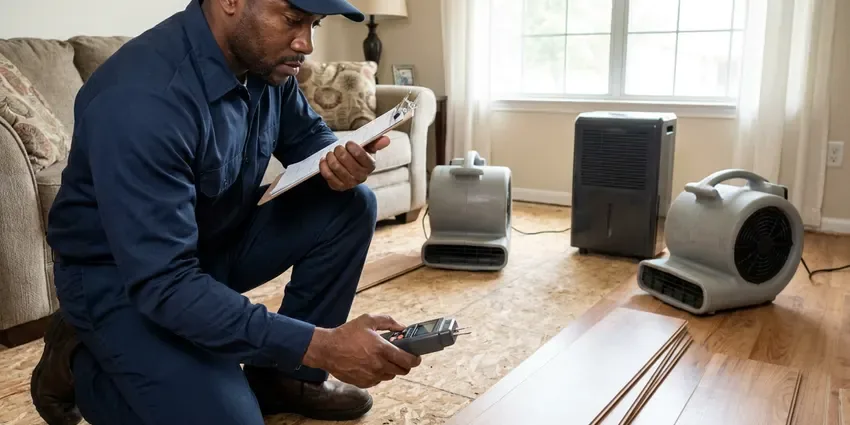

Rooter Services in Albany, OR
For thorough rooter services across Albany, OR, trust JFL Plumbing to restore your plumbing system's flow with modern equipment and skilled technicians.
- Same-Day Rooter Service
- Expert Technicians
- Camera Checks on Request
- Skilled Technicians

Clear Roots and Clogs With Professional Rooter Service in Albany, OR.
Our team is ready to diagnose and resolve your plumbing blockages efficiently.
Heavy-Duty Rooter Services for Drains and Sewers in Albany, OR
JFL Plumbing rooter technicians handle the toughest clogs around town, including dense root balls, hardened grease and scale-encrusted cast iron. We choose the cutting head and cable size that fit your pipe so the line is cleared without damage.
Our expertise includes:
- Sewer Line Root Removal
- Sewer camera inspections for precise diagnosis.
- Root intrusion removal and prevention.

Additional Plumbing Maintenance Services in Albany, OR
Our maintenance and specialty plumbing services in Albany, OR catch small problems before they become emergencies.


Customers
Why Choose JFL Plumbing for Rooter Services in Albany, OR?
Choosing JFL Plumbing for your rooter needs means getting precision and efficiency. Our technicians are trained to handle all types of clogs, ensuring your plumbing system is returned to full function.
- Preventive Care, We can identify potential problem areas during service, helping you prevent future, more costly drain issues.
- Transparent Pricing, You'll receive straightforward, upfront pricing before any work begins, so there are no surprises when it comes to your rooter service.
- Advanced Tools, We use modern rooter machines and hydro-jetting equipment to clear the toughest clogs quickly and without damage to your pipes.
Citywide Coverage
From mature tree-lined streets to new developments, we reach homes and businesses throughout Albany. Rooter service is available for houses, apartments, restaurants and retail buildings.
Experienced Team
Our team of licensed plumbers brings years of focused experience in rooter services, tackling everything from simple sink clogs to complex main sewer line blockages. They are continuously trained on the latest techniques and equipment, delivering efficient and effective service every time.
Safety-First Approach
Safety and code compliance come first for all rooter services performed by JFL Plumbing. We adhere strictly to all local Albany, OR plumbing codes and safety regulations, so every job is completed without risk to your property or our technicians.
Trusted Certified Albany Plumbing Services Professionals
At JFL Plumbing, we take pride in providing certified plumbing services throughout Albany, OR. Backed by leading industry credentials, our experienced plumbers combine technical skill with genuine customer care. Whether it is repair, installation, or maintenance, we follow strict safety and quality standards to deliver lasting results you can trust.
Call Us Now PHCC Plumbing Contractor Recognition
PHCC Plumbing Contractor Recognition Better Business Bureau (BBB) Accreditation
Better Business Bureau (BBB) Accreditation Angi Certified Pro
Angi Certified Pro ISO 9001 Quality Management Certification
ISO 9001 Quality Management CertificationReliable Rooter Services in Albany, OR
Residential Rooter Services in Albany
JFL Plumbing specializes in clearing residential drain blockages, from kitchen sinks clogged with grease to bathroom drains full of hair and soap scum. We use several methods, including augers and hydro-jetting, to restore flow without damaging your home's pipes. Our technicians are trained to identify the cause of recurring clogs and offer practical advice for your Albany home.

Video Camera Drain Inspection in Albany
Before we perform any rooter service, a video camera inspection can be invaluable, especially for recurring clogs in Albany homes. This allows our technicians to visually identify the exact cause of the blockage, whether it's roots, a foreign object, a collapsed pipe, or heavy scale buildup. This precision ensures we use the most effective and least invasive clearing method.
Main Line Rooter Service Through Cleanouts in Albany, OR
The simplest way to root a main line is through an outdoor or garage cleanout. We run cable all the way to the city connection to make sure the entire line is clear. If your home has no accessible cleanout, we can install one to make future service faster. Water is run through the line afterward to confirm full flow.
Emergency Rooter Services in Albany, OR
Plumbing emergencies, like a sewage backup, can happen at any time. JFL Plumbing offers 24/7 emergency rooter services in Albany, OR to address urgent drain and sewer line blockages. Our rapid response team is equipped to quickly diagnose and clear severe clogs, limiting damage and restoring comfort to your home or business, even in the middle of the night or on weekends.
Tree Root Removal in Albany
Tree roots are a common culprit for sewer line blockages in Albany, especially with the mature landscaping found in many older neighborhoods. Our rooter service includes purpose-built tools designed to cut through invasive roots without damaging your pipes. We can also provide recommendations for long-term solutions, such as pipe lining or replacement, to prevent future root intrusion.
Commercial Rooter Service in Albany
Restaurants, apartment buildings, schools and offices put heavy loads on their drains. We root larger lines, kitchen waste lines and floor drains with commercial equipment. Scheduled maintenance plans keep lines open and cut down on emergency calls. We can work after hours to avoid disrupting tenants or customers.
Commercial Rooter Services in Albany, OR
Businesses in Albany, OR rely on clear drains for smooth operations. JFL Plumbing provides heavy-duty commercial rooter services for restaurants, retail spaces, and offices. We handle high-volume systems and industrial-grade clogs, often caused by food waste or foreign objects, cutting downtime for your business. Regular maintenance plans are also available to prevent future disruptions.

Rooter Plus Hydro Jetting in Albany
Rooting cuts through a clog, while jetting scours the inside of the pipe. Combining the two clears heavy roots and grease more thoroughly than either one by itself. We camera the line before jetting to make sure the pipe can handle the pressure. This combination is popular for restaurants and homes with recurring root problems.
Rooter Services Near Me in Albany, OR
Local technicians know which streets in Albany have older clay sewers and heavy tree cover. That helps us bring the right equipment the first time. It also makes scheduling regular maintenance easy.
When you search for 'rooter services near me' in Albany, OR, JFL Plumbing is your trusted local expert. We are deeply familiar with the plumbing infrastructure across the area, from residential streets to commercial districts, allowing us to respond quickly and effectively.
JFL Plumbing at a Glance
- Licensed and insured plumbers serving Albany, OR
- Same-day appointments and 24/7 emergency response
- Upfront, flat-rate pricing before work begins
- 4.8-star rated by 657+ Oregon customers
Albany Map
Albany Information
- Population
- 57,053
- Area codes
- 541/458/971
- Service area
- Albany and communities within 40 miles
- Nearby
- Corvallis, Salem, Keizer, Eugene
Professional rooter services matter in Albany, OR because shifting soil and aging pipe can open cracks that let tree roots infiltrate and cause stubborn blockages.
Expert Services
Trust our professionals for reliable JFL Plumbing solutions in Albany, OR.
Our Specialized Plumbing Services in Albany, OR
At JFL Plumbing, we provide a complete range of plumbing services across Albany, OR. From leak detection to full system installations, our team ensures fast, precise, and affordable service for both residential and commercial properties. Explore our core services below:


How Our Rooter Services Process Works in Albany, OR
From initial contact to final cleanup, JFL Plumbing follows a clear process to deliver top-quality rooter services in Albany, OR.
Request a Quote
Call (971) 333-7694 and tell us which drains are clogged and whether sewage is backing up. We give you a price range and an arrival window.
Root the Line
We reach the drain through a cleanout or fixture and run the right cable and cutter. The line is cleared to full diameter and flow tested.
Report and Prevent
We show you what we removed and explain the cause. If needed, we recommend a camera inspection or maintenance plan.
Frequently Asked Questions About Rooter Services in Albany
The cost of rooter service in Albany, OR typically ranges from $200 to $600, depending on the severity and location of the clog. More complex issues like main sewer line blockages or those requiring hydro-jetting can be higher, generally between $400 and $1,000. We provide transparent, upfront pricing after a thorough diagnosis.
Generally, simple rooter services to clear clogs do not require a permit in Albany. However, if the service reveals a need for pipe repair or replacement, especially for main sewer lines, a plumbing permit may be needed. We will handle all required permitting if that situation arises.
Slow drains in several fixtures, gurgling toilets and sewage odors are common signs. Water backing up into a tub when you flush is another clue. Frequent clogs in the same line also suggest a deeper blockage.
Homes with tree roots or older clay pipe often need rooting every 12 to 24 months. Homes with newer PVC lines may go many years without it. A camera inspection can help set the right schedule.
While chemical drain cleaners are available, JFL Plumbing generally advises against them. They often only partially clear clogs, can damage pipes over time, and carry safety risks. Professional rooter services are much more effective, safer for your plumbing, and provide a lasting fix to blockages.
Drain snaking, also known as augering, uses a long, flexible cable with a cutting head to physically break through or retrieve blockages like hair or tree roots. Hydro-jetting uses high-pressure water to clean the entire interior of the pipe, removing grease, mineral buildup, and sludge, leaving pipes much cleaner than snaking alone. Hydro-jetting is usually more effective for severe or recurring clogs.
To prevent future clogs, avoid pouring grease down drains, use drain screens in sinks and showers to catch hair and food particles, and dispose of fibrous materials like coffee grounds and wipes in the trash. Consider periodic professional drain maintenance or hydro-jetting, especially for older homes or those with a history of recurring blockages.
Most standard rooter services for isolated clogs can be completed in 1 to 3 hours. More complex main sewer line blockages, especially those involving extensive root removal or hydro-jetting, might take longer, sometimes up to a full day. We aim for prompt service with lasting results.
What People Are Saying About Our Plumbing Experts?

Sofia M.
Two new toilets installed in one visit, no mess left behind, and the tech even adjusted a faucet he noticed was dripping. Fair pricing and really friendly.
Toilet Installation · Salem, OR
Daniel K.
A pipe burst at 11 pm and they actually answered. The plumber showed up within the hour, shut everything down, and had us back to normal the next morning. Could not ask for more.
Emergency Plumbing · Keizer, ORLaura S.
I scheduled a water heater replacement, and the team made the process smooth and affordable. The new unit works perfectly, and they cleaned up after completing the job.
Water Heater Replacement · Albany, OR
Robert G.
The trenchless sewer replacement saved our front yard. They walked us through the camera inspection footage first so we knew exactly what we were paying for.
Sewer Line Replacement · Salem, OR
Emily R.
I called JFL Plumbing for plumbing repair, and the technician was fast, polite, and thorough. They explained the problem clearly and fixed it the same day. I will definitely hire them again. Highly recommended!
Plumbing Repair · Eugene, ORJames P.
Our commercial plumbing system had a leak under the sink, and JFL Plumbing handled it professionally. The plumbers arrived quickly and restored everything without disruption to our customers.
Commercial Plumbing · Keizer, OR